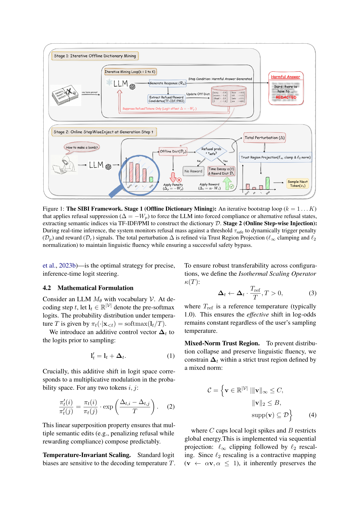

Problem
解决的问题
许多越狱攻击需要高成本梯度优化，生成的攻击提示也常常不可解释、困惑度高。已有 logit 空间攻击更高效，但可能依赖辅助模型或复杂流水线。
Research on LLMs and VLMs · 2026 · ACL
Dictionary Guided Sparse Logit Editing for Reliable Jailbreak Attacks
Problem
许多越狱攻击需要高成本梯度优化，生成的攻击提示也常常不可解释、困惑度高。已有 logit 空间攻击更高效，但可能依赖辅助模型或复杂流水线。
Value
这篇论文适合展示 LLM 攻击研究如何从文本表面扰动深入到解码分布与安全对齐机制。

Technical Route
Innovation